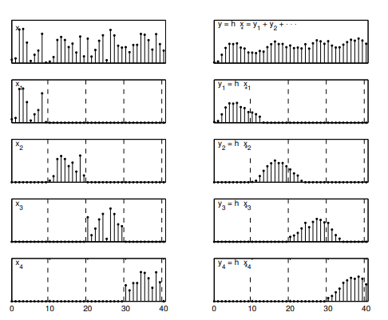
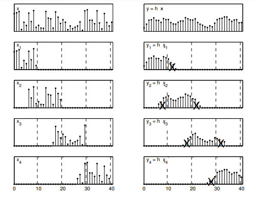

Question 1. Overlap add and Overlap save are the two methods for linear FIR filtering a long sequence on a block-by-block basis using DFT.
True False Cannot be determined None of the above
Question 2. The first M-1 values of the output sequence in every step of Overlap save method of filtering of long sequence are discarded.
Question 3. Which of the following is true in case of Overlap add method?
M zeros are appended at last of each data block M zeros are appended at first of each data block M-1 zeros are appended at last of each data block M-1 zeros are appended at first of each data block
Question 4. In Overlap save method of long sequence filtering, how many zeros are appended to the impulse response of the FIR filter?
L+M L L+1 L-1
Question 5. The overlap save method is used to calculate
The discrete convolution between a sampled signal and a finite impulse response (FIR) filter The discrete convolution between a sampled signal and an infinite impulse response (IIR) filter The discrete convolution between a very long signal and a finite impulse response (FIR) filter The discrete convolution between a very long signal and a infinite impulse response (IIR) filter
Question 6. The circular convolution of two sequences in time domain is equivalent to
Multiplication of DFTs of two sequences Summation of DFTs of two sequences Difference of DFTs of two sequences Square of multiplication of DFTs of two sequences
Question 7. Overlap-Add Method Deals with principles that
The linear convolution of a discrete-time signal of length L and a discrete-time signal of length M produces a discrete-time convolved result of length L + M – 1 The linear convolution of a discrete-time signal of length L and a discrete-time signal of length M produces a discrete-time convolved result of length L + M The linear convolution of a discrete-time signal of length L and a discrete-time signal of length M produces a discrete-time convolved result of length 2L + M – 1 The linear convolution of a discrete-time signal of length L and a discrete-time signal of length M produces a discrete-time convolved result of length 2L + 2M – 1
Question 8. Circular shift of an N point is equivalent to
Circular shift of its periodic extension and its vice versa Linear shift of its periodic extension and its vice versa Circular shift of its aperiodic extension and its vice versa Linear shift of its aperiodic extension and its vice versa
Question 9. For the given sequence x[n] { 1,2,3,4, 2,1,3,1} find y_1(n) using overlap save method h[n]= {2,1}
{6,1,9,7} {0,0,1,2} {2,0,1,3} {1,0,1,2}
Question 10. For the given sequence x[n]= { 3,0,-2,0,2,1, 0,-2,-1,0} h[n]={2,2,1} find y_1(n) using overlap add method
{6,1,9,7,1} {6,6,-9,7,3} {6,2,-9,-7,5} {6,6,9-1,-4,-2}
Question 11. For given sequence x_1(n)= { 1,2,3,4} and x_2(n)={5,6,7,8} find y_1 using circular convolution
67 69 68 66
Question 12. The convolution of a discrete signal with itself is
Squaring the signal Doubling the signal Adding two signals is not possible
Question 13.  Identify the Algorithm
Overlap save method Overlap add method Overlap add & save method None of the mentioned
Question 14.  Identify the Algorithm
Question 15. Overlap Save method is also called as:
Overlap-Discard Overlap-Add Overlap-Keep Overlap-Remove
Question 16. Find the output y(n) of a filter whose impulse response is h(n)={1,1,1} and input signal x(n)={3,-1,0,1,3,2,0,1,2,1}using overlap save method
{3,2,2,0,9,8,7,6,5,1,2,0} {3,2,2,0,9,8,7,6,5,1,3,1} {3,2,2,0,4,6,5,3,3,4,3,1} {3,2,2,0,4,6,5,3,3,4,3,0}
Question 17. Find the output y(n) of a filter whose impulse response is h(n)={1,1,1} and input signal x(n)={3,-1,0,1,3,2,0,1,2,1}using overlap save method
{3,2,2,0,9,8,7,5,5,0} {3,2,2,0,9,8,7,6,5,1} {3,2,2,0,4,6,5,3,3,4} {3,2,2,0,8,6,6,3,3,4}
Score out of 17= Score in percentage =